• Definir datos en el dashboard
Paso 1. Ingresar datos de ambiente de producción
Para ingresar estos datos previamente debemos contar con un ambiente de producción y poseer una clave de integracion en la consola de producción
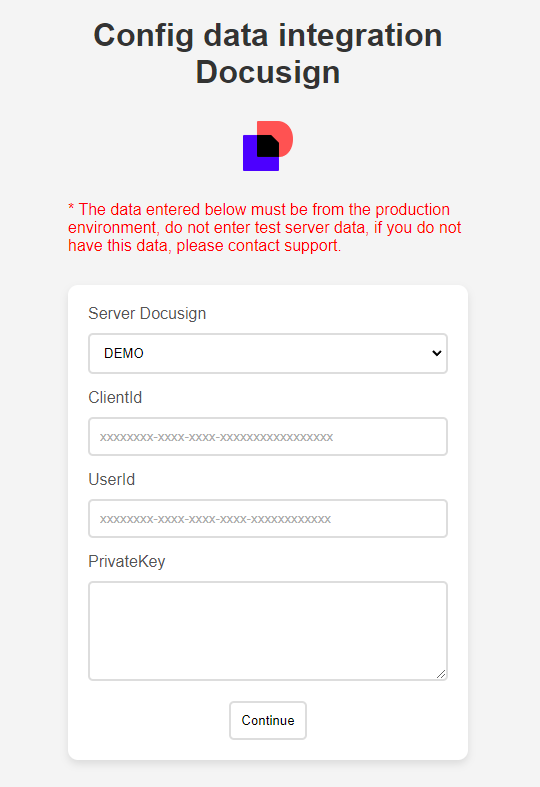! En caso de no contar con los datos
Si no cuentas con estos datos, puedes comunicarte con nuestra area de SOPORTE, debes rellenar el formulario e indicar el producto docusign.
• Localizar Server de docusign
Paso 1. Ingresar en la consola de docusign
Nos dirigimos a Configuracion y en el menu de la izquierda nos dirigimos a Aplicaciones y claves, en esta sesion encontraremos, nuestra base url, validamos el servidor y lo indicamos en el formulario.
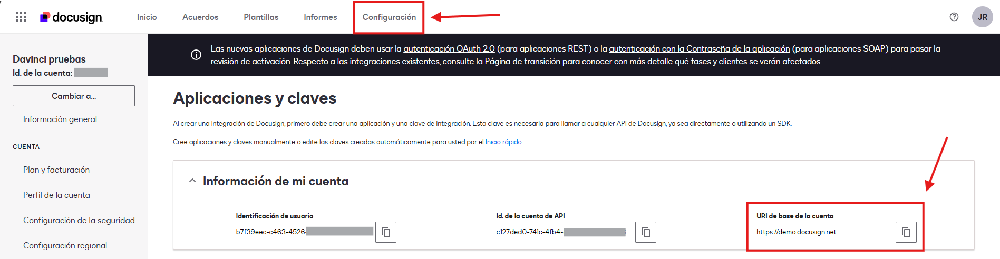 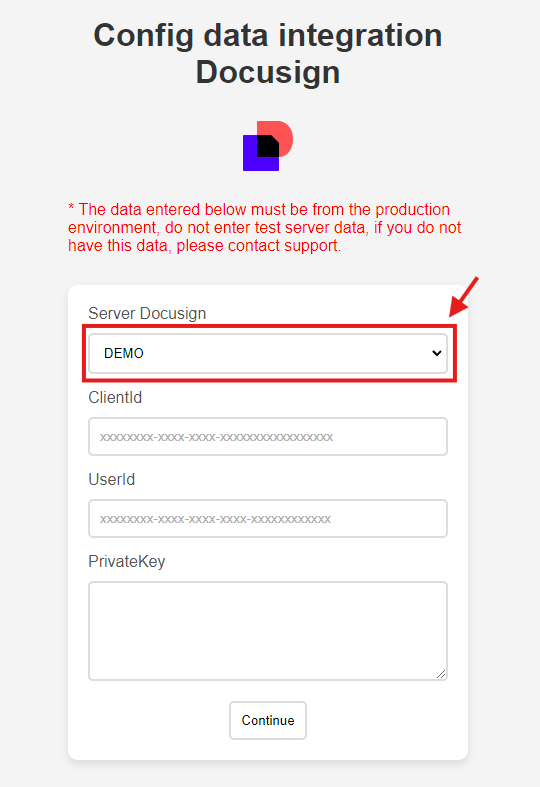• Localizar Clientid
Paso 1. Ingresar en la consola de docusign
Nos dirigimos a Configuracion y en el menu de la izquierda nos dirigimos a Aplicaciones y claves, en esta sesion encontraremos, nuestra clave de integracion.
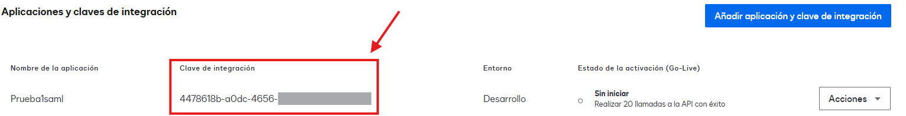 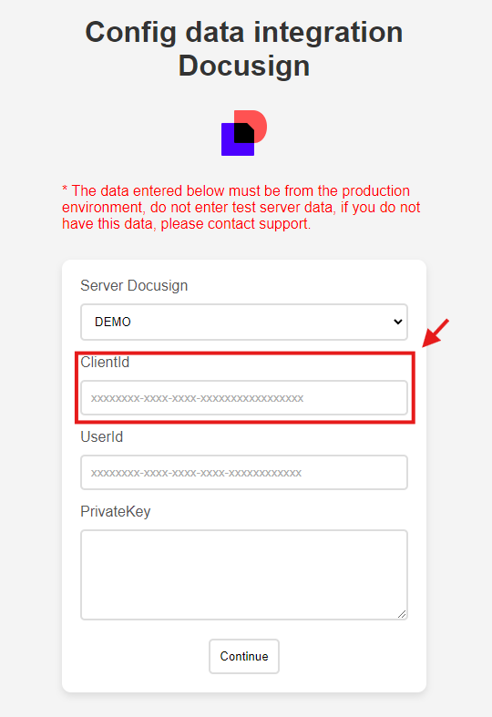! En caso de no contar con los datos
Si no cuentas con estos datos, puedes comunicarte con nuestra area de SOPORTE, debes rellenar el formulario e indicar el producto docusign.
• Localizar Userid
Paso 1. Ingresar en la consola de docusign
Nos dirigimos a Configuracion y en el menu de la izquierda nos dirigimos a Aplicaciones y claves, en esta sesion encontraremos, nuestro Userid.
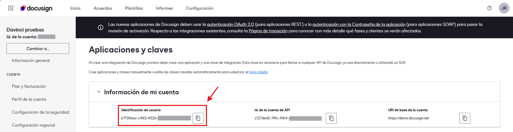 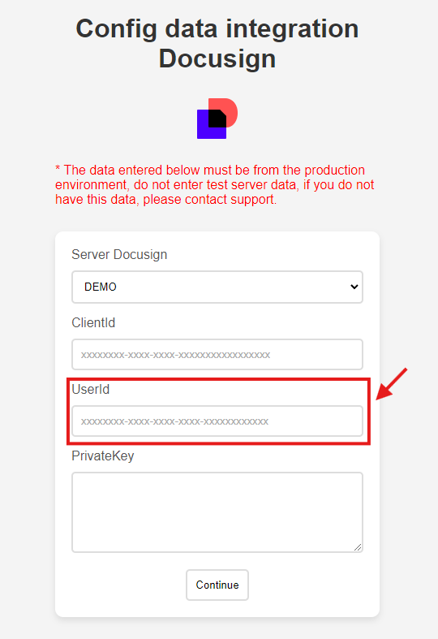• Localizar Privatekey
Paso 1. Ingresar en la consola de docusign
Nos dirigimos a Configuracion y en el menu de la izquierda nos dirigimos a Aplicaciones y claves, en esta sesion encontraremos nuestra clave de integracion y pulsamos en editar, localizamos el siguiente apartado
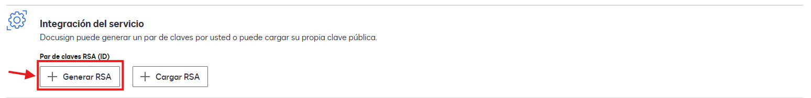 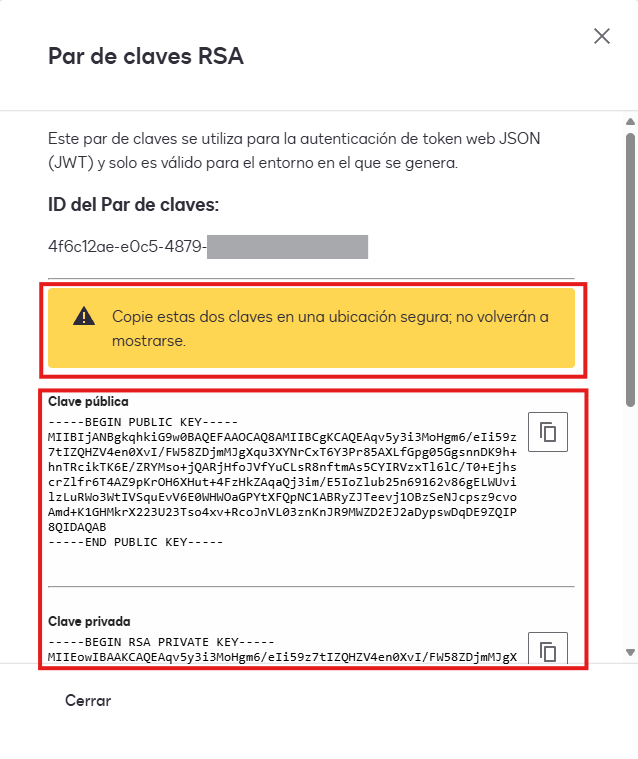Paso 2. Guardar y ingresar datos de la clave privada
Guarda estos datos son muy importantes, vas a indicar la clave privada en el fomulario
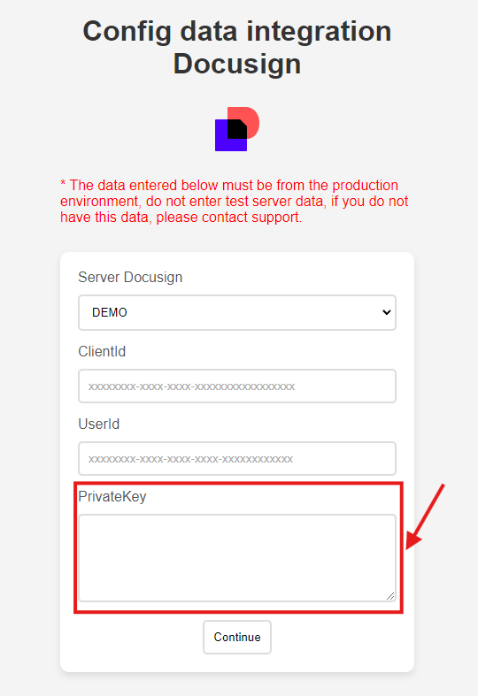• Configurar redirecion en la clave de integracion
Paso 1. Ingresar en la consola de docusign
Nos dirigimos a Configuracion y en el menu de la izquierda nos dirigimos a Aplicaciones y claves, en esta sesion encontraremos nuestra clave de integracion y pulsamos en editar, localizamos el siguiente apartado
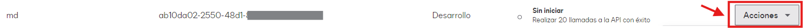 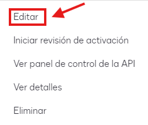 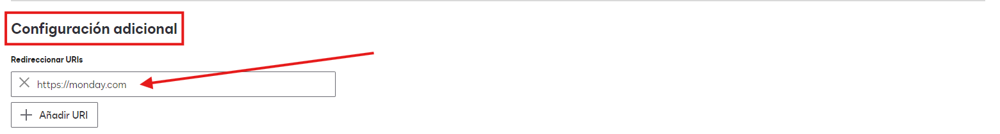Paso 2. Validar configuracion
Valida cuidadosamente que los datos este iguales en el redirect, debes introducion la siguiente url https://monday.com
• Ayuda con el proceso
Paso 1. Ingresar en el formulario de soporte
Si requieres ayuda con el proceso o no cuentas con algunos de los datos, puedes acceder a nuestro canal de soporte para recibir ayuda o asesoria sobre el proceso de vinculacion